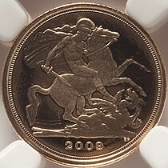
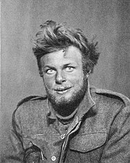

Welcome to Wikipedia
the free encyclopedia that anyone can edit
6,786,421 articles in English
From today's featured article
The quarter sovereign is a British gold coin issued by the Royal Mint since 2009. It has been issued as a bullion coin and as a collector's coin. The smallest in the sovereign range, it has a face value of 25 pence.
In 1853, the Royal Mint produced two patterns for a quarter sovereign for circulation, with one denominated as five shillings. These coins never went into production. In 1979, the Royal Mint began to sell sovereigns to those wishing to own gold coins, by the following year selling four different denominations, ranging from the half sovereign to the five pound gold coin.
In 2009, a quarter sovereign was introduced as an extension of this range. It shares the same design as the larger coins, depicting Elizabeth II on the obverse, or since 2022, Charles III. Although there are some one-year designs, the one most often used on the reverse is Benedetto Pistrucci's depiction of Saint George and the Dragon (shown), which was first used on the sovereign in 1817. (Full article...)
Recently featured: TeloschistaceaeJohn Spencer (snooker player)
The Legend of Zelda: Oracle of Seasons and Oracle of Ages
Archive By email More featured articlesAbout
Did you know ....
- ... that Mike Sadler (pictured) guided nighttime raids on enemy targets as a celestial navigator during the Western De
- ... that the founder of a California TV station opted not to name it for himself because the call sign would have sounded like "cough"?
- . that William N. Salin was twice decorated with the Sagamore of the Wabash?
- .. that the Soviet soprano Tamara Milashkina performed alongside her husband Vladimir Atlantov at New York's Metropolitan Opera in 1975?
- ... that for a while in the 1950s, Englewood Golf Club was co-owned by four well-known comedians?
- .. that Prey is the first feature film to have a full Comanche language dub?
- ... that Margaret Donahue was the first female executive in Major League Baseball?
- ... that for several millennia, some humans buried corpses in their houses?
In the news
- At the British Academy Film Awards, Oppenheimer wins Best Film and six other awards, including Best Actor for Cillian Murphy (pictured).
- Russian opposition leader Alexei Navalny dies in a corrective labor colony near Kharp, at the age of 47.
- In American football, the Kansas City Chiefs defeat the San Francisco 49ers to win the Super Bowl
- In association football, the Africa Cup of Nations concludes with Ivory Coast defeating Nigeria in the final.
- Alexander Stubb is elected President of Finland.
Ongoing: Israel–Hamas warMyanmar civil warRed Sea crisisRussian invasion of Ukraine timeline
On this day
February 20: Day of the Heavenly Hundred Heroes in Ukraine (2014)
- 1685 : The French colonization of Texas began with the landing of colonists led by Robert de La Salle near Matagorda Bay.
- 1959 : Canadian prime minister John Diefenbaker cancelled the Avro CF-105 Arrow (pictured) interceptor-aircraft program amid much political debate.
- 1970 : The Wat Phra Dhammakaya in Pathum Thani province, one of the largest Buddhist temples in Thailand, was founded.
- 1998 : At the age of 15, American figure skater Tara Lipinski became the youngest gold-medal winner in the history of the Winter Olympic Games at the time.
Wulfric of Haselbury (d. 1154)Elizabeth Holloway Marston (b. 1893)Gail Kim (b. 1977)Tōru Takemitsu (d. 1996)
More anniversaries: February 19February 20February 21